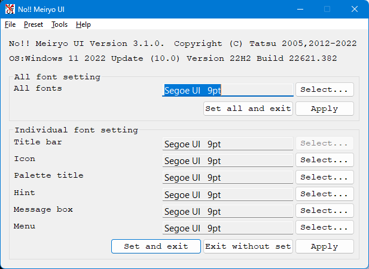

Run noMeiryoUI.exe.
This icon( ).
).
And, below window is displayed.

Push select... button to set user interface element.
When you push select... button, this dialog is displayed.

Choice font face, font size, font style, charset, and push OK button.
Push set button , you can set user interface font.